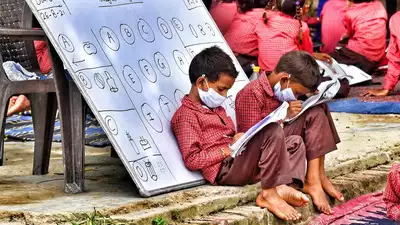
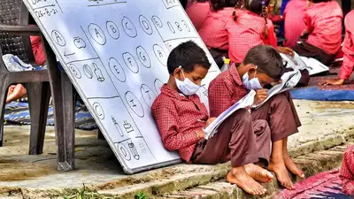
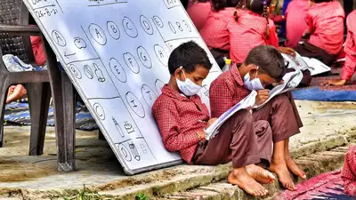
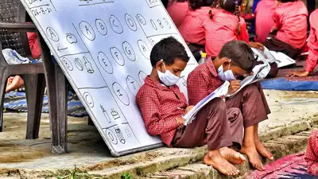

Career guidance helps individuals understand their strengths and interests to make informed decisions about their future. It provides valuable insights into various career options, educational pathways, and job opportunities. With proper guidance, one can achieve personal and professional fulfillment by aligning their career goals with their abilities and aspirations.
Career guidance is essential for rural communities, offering tailored support to navigate local job markets and educational pathways effectively. It empowers individuals by aligning their skills with available opportunities, fostering sustainable economic growth.
Empowering Tomorrow's Leaders, One Rural Student at a Time.
Education Blooms Wherever Opportunity Grows: Rural Education Matters.
Unlocking Potential, Building Futures: Investing in Rural Education.
Strength in Knowledge: Bridging Gaps, Transforming Lives in Rural Communities.
From Fields to Futures: Cultivating Excellence through Rural Education.